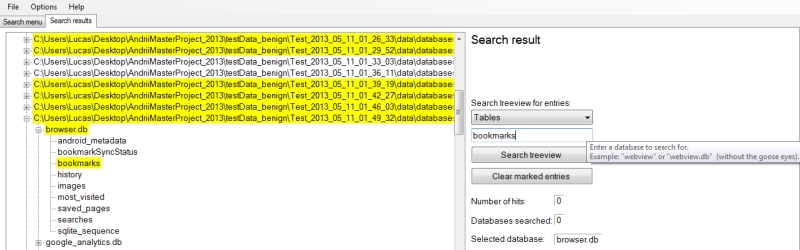

Searching the treeview for entries with the name "bookmarks".
Since a search can result in a lot of data and listings, the result tab
have a search field with a dropdown combobox and a textbox. As one can see
in the image above, the matches are highlighted in yellow. These also
relates to the parent of the highlighted item, so that matches can be found.
When executing a new search, all highlighted items will be un-highlighted.
This also happens if you click the button "Clear marked entries".
The search is related to the content in the Treeview, and one can search
for:
Searching the treeview for entries with the name "bookmarks".
- All: Searches for matches within folder, database and table names
- Folders: Searches for named matches in the listed folders
- Databases: Searches for named matches in the listed databases
- Tables: Searches for named matches in the listed tables
<Current version 1.0.0.0>